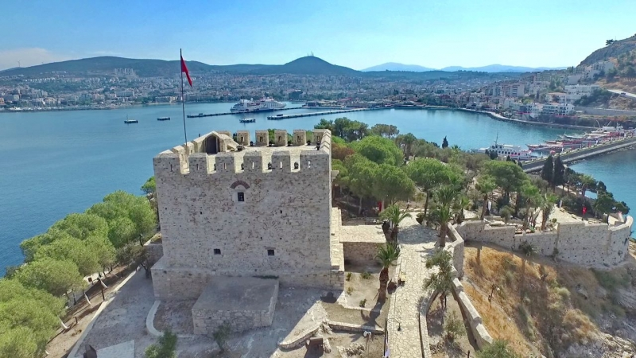
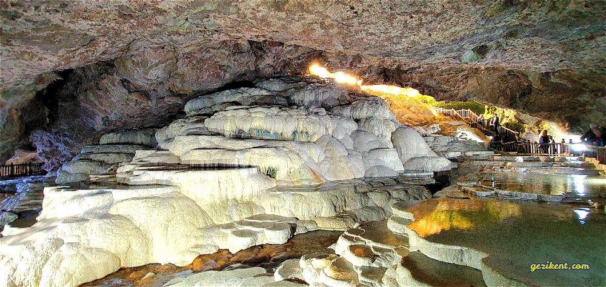
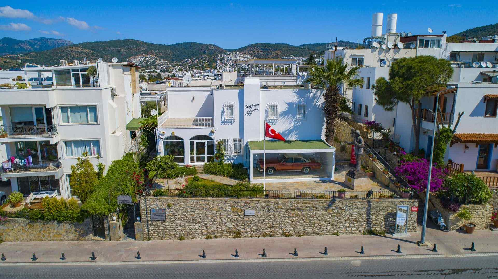

EGE BÖLGESİNDE GEZİLMESİ GEREKEN YERLER
Manisa-AKHİSAR MÜZESİ

İzmir-ALSANCAK SEVGİ YOLU

Kütahya-DUMLUPINAR ŞEHİTLİĞİ

İzmir-EFES ANTİK KENTİ

Aydın-GÜVERCİNADA KALESİ

İzmir-İZMİR SAAT KULESİ

Denizli-KAKLIK MAĞARASI

Muğla-KELEBEKLER VADİSİ

İzmir-KEMERALTI ÇARŞISI

Denizli-PAMUKKALE TRAVERTENLERİ

Uşak-UŞAK ARKEOLOJİ MÜZESİ

Muğla-ZEKİ MÜREN SANAT MERKEZİ
